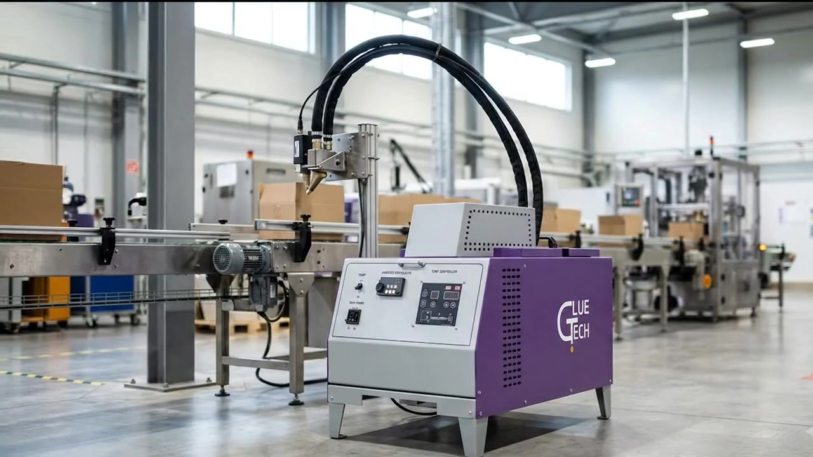

핫멜트는 용제를 포함하지 않은, 상온에서 100% 고체인 열가소성 수지 접착제입니다. 불휘발성·불연성이라 열로 녹여 바르고, 식으면서 바로 굳습니다.
가장 일반적인 타입으로, 주로 포장 박스 접착에 쓰입니다.
유연성과 장력이 좋아 실링·가스켓에 쓰이고, 상온 감압형으로도 쓰입니다.
내열성·내유성 등 특수한 조건이 필요할 때 씁니다.
| 모델 | 규격 | 특징 | 이럴 때 |
|---|---|---|---|
| S008 ~ S080 | 13 × 13 mm 육각 | 0.1 mm 단위 구경 제작 | 정해진 굵기로 선을 그어 바를 때 |
| M1200 ~ M0800 | 12 × 12 mm 육각 | 0.1 mm 단위 구경 제작 · 분사 각도 조절 | 분사 각도를 맞춰야 할 때 |
| MA002 모듈 | 에어 솔레노이드 밸브 | Spiral pattern 분사 · 분사량 조절 | 나선형으로 넓게 뿌릴 때 |
※ 홍보용으로 만든 영상입니다. 실제 설치 현장 영상을 받으면 바꿉니다.